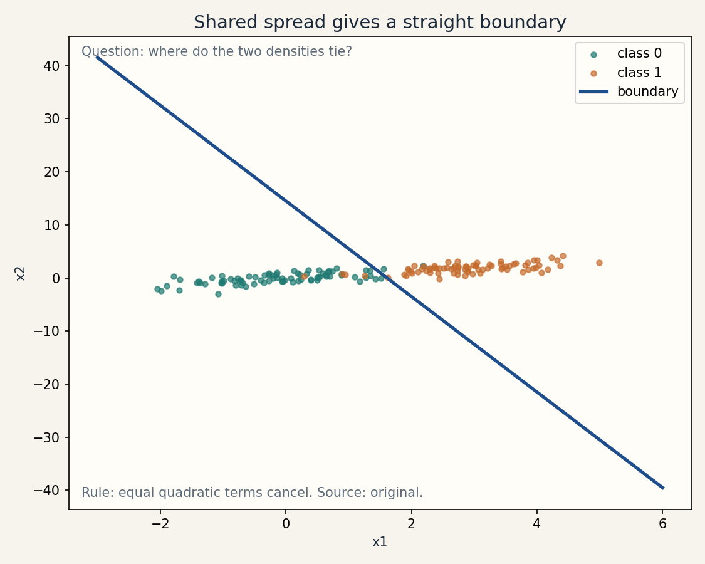
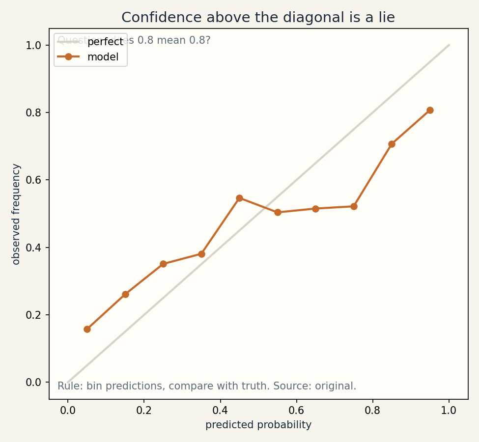

Lesson 04 · Generative classifiers
Lesson 04, Generative classifiers and density assumptions
Unit: cs229-U04. Leaf concepts: cs229-U04-C01 to C12. Date: 2026-10-06. Baseline: October 6, 2026.
Source mapping
Chapter 4 of the notes (SRC-01, PDF pages 36-48) was read in full on 2026-10-06. Section 4.1 gives the multivariate Gaussian, the GDA model with shared covariance, the MLE formulas, the decision-boundary figure, and the GDA vs logistic regression discussion. Section 4.2 gives naive Bayes, the conditional independence assumption, Laplace smoothing with the NeurIPS example, and the Bernoulli vs multinomial event models. Misspecification, calibration, and imbalanced evaluation are bridge content. Leaf rows carry SOURCE ATTRIBUTION PENDING until the RUN 6 pass.
Scope and objectives
Scope: learning p(x | y) and p(y), then using Bayes rule to classify. Gaussian class densities, word-count models, and what breaks when the density is wrong.
Objectives: the learner can (1) write the multivariate Gaussian density, (2) derive the GDA parameter estimates, (3) explain why shared covariance gives a linear boundary, (4) contrast generative and discriminative models, (5) apply naive Bayes with Laplace smoothing, (6) compare the two event models, (7) diagnose misspecification and calibration failures.
Dependencies
Prerequisites: P04, P06, P07 (shared bridges, linked).
Not-yet-understood list:
- The multivariate Gaussian (remediated in SL-01).
- Bayes rule for classification (remediated in SL-02).
- Conditional independence (remediated in SL-04).
- Calibration (remediated in SL-07).
SL-01: The multivariate Gaussian
Covers C01 (multivariate Gaussian).
Source anchor
SRC-01 section 4.1.1, pages 36-39. The notes give the density, the mean and covariance, and the contour figures for varying Sigma.
Motivating question
How do you describe a cloud of points in d dimensions with one formula?
Mental model
A Gaussian is a bell curve in d dimensions. The mean mu is where the cloud sits. The covariance Sigma is how it spreads: diagonal entries are per-axis variances, off-diagonals tilt the cloud. Contours are ellipses.
Objects, symbols, shapes, assumptions
- Density: p(x, mu, Sigma) = 1/((2 pi)^{d/2} |Sigma|^{1/2}) exp(-(1/2)(x - mu)^T Sigma^{-1} (x - mu)).
- mu in R^d, Sigma in R^{d x d}, symmetric positive definite.
- Assumption: Sigma invertible. The data really clusters in an elliptical cloud.
Computed example
d = 2, mu = [0, 0], Sigma = [[1, 0.8], [0.8, 1]]. Determinant: 1 - 0.64 = 0.36. |Sigma|^{1/2} = 0.6. At x = [1, 1]: (x - mu)^T Sigma^{-1} (x - mu). Sigma^{-1} = (1/0.36)[[1, -0.8], [-0.8, 1]] = [[2.778, -2.222], [-2.222, 2.778]]. Quadratic form: [1,1] @ that @ [1,1]^T = 2.778 - 2.222 - 2.222 + 2.778 = 1.112. Density: 1/(2 pi * 0.6) * exp(-0.556) = 0.2653 * 0.5735 = 0.1522.
Correctness checks
- The density integrates to 1. Numerically integrate on a grid for d = 1 to verify.
- Sigma must be symmetric with positive eigenvalues. Check both.
Nearest alternative
Mixture of Gaussians (U10): several clouds instead of one. Kernel density: no parametric shape at all.
Failure case
Sigma singular (points on a line in 2-D): the density is undefined, |Sigma| = 0. The model needs full-rank data or a regularized Sigma.
SL-02: Gaussian discriminant analysis
Covers C02 (GDA estimation), C03 (shared covariance), C04 (decision boundaries), C09 (class priors).
Source anchor
SRC-01 sections 4.1.2-4.1.3, pages 39-42. The model: y ~ Bernoulli(phi), x | y = 0 ~ N(mu0, Sigma), x | y = 1 ~ N(mu1, Sigma). MLE: phi = fraction of class 1, mu_c = class mean, Sigma = pooled scatter / n. The notes show the posterior is logistic in x and discuss when GDA beats logistic regression.
Motivating question
Instead of drawing a line between elephants and dogs, can we model what elephants look like and what dogs look like, then ask which model fits a new animal better?
Mental model
Fit one Gaussian per class, sharing the covariance. The class prior phi is the fraction of class-1 examples. To classify, use Bayes rule: p(y = 1 | x) is proportional to p(x | y = 1) p(y = 1). The denominator is not needed for the argmax.
Derivation: the estimates
Joint log likelihood: sum_i log p(x^{(i)} | y^{(i)}) + log p(y^{(i)}). The phi terms separate from the Gaussian terms. Maximizing over phi: phi = (1/n) sum_i 1{y^{(i)} = 1}. Maximizing over mu0: derivative of sum over class-0 examples of -(1/2)(x - mu0)^T Sigma^{-1}(x - mu0) gives mu0 = class-0 mean. Same for mu1. Sigma: pooled average of (x^{(i)} - mu_{y^{(i)}})(x^{(i)} - mu_{y^{(i)}})^T over all n examples (notes page 40).
Why the boundary is linear
log p(y=1|x) - log p(y=0|x) = log p(x|y=1) - log p(x|y=0) + log(phi/(1-phi)). With shared Sigma the quadratic terms -(1/2) x^T Sigma^{-1} x cancel, leaving a linear function of x. So the posterior is logistic: p(y=1|x) = g(theta^T x) for a theta built from phi, Sigma, mu0, mu1 (notes page 41). Separate covariances would leave a quadratic boundary (quadratic discriminant analysis).
Computed example
Class 0: (0,0), (1,0). Class 1: (0,2), (1,2). phi = 0.5. mu0 = (0.5, 0), mu1 = (0.5, 2). Centered points: class 0: (-0.5,0),(0.5,0). Class 1: (-0.5,0),(0.5,0). Pooled Sigma = (1/4) * [[0.25+0.25+0.25+0.25, 0],[0, 0]] = [[0.25, 0], [0, 0]]. Singular. Add tiny ridge 1e-6 on the diagonal for the demo: the boundary is the horizontal line y = 1, halfway between the class means. New point (0.5, 1.5): closer to mu1, predict 1.
Correctness checks
- Class means must lie inside their class clouds.
- Sigma pooled from both classes, divided by n (the MLE, the unbiased version divides by n - 2, but the notes use the MLE).
- Posterior probabilities sum to 1 across classes.
Nearest alternative
Logistic regression: models p(y | x) directly, weaker assumptions, less harmed when the Gaussian shape is wrong (notes page 42).
Failure case
Classes with different spreads (one tight, one wide): shared Sigma fits neither well, the linear boundary misclassifies the wide class’s far side. Fix: separate covariances (quadratic boundary) or drop the Gaussian assumption.
Russian-doll ladder for GDA
- Shell 0: Question: which class density fits x better? Observable: the posterior probability.
- Shell 1: Toy: the four-point example above.
- Shell 2: Objects: phi, mu0, mu1, Sigma.
- Shell 3: Rule: fit class means and pooled scatter, apply Bayes.
- Shell 4: Derive: MLE by separating the log likelihood.
- Shell 5: Invariant: shared Sigma makes the boundary linear. Check by computing the log odds.
- Shell 6: Change one factor: give class 1 ten times the spread. Predict the boundary curves, then verify with a quadratic fit.
- Shell 7: Counterexample: Poisson-distributed features. The GDA fits Gaussians and the boundary misleads (notes page 42).
- Shell 8: Compare: GDA vs logistic regression on small n Gaussian data (GDA wins) and on Poisson data (logistic wins).
- Shell 9: Extension: measure the sample size where logistic catches up on Gaussian data. Falsifiable claim: the crossover n grows as the classes overlap more.
- Shell 10: Production: a fraud model chooses GDA for its data efficiency on 200 examples. The decision is gated on a Gaussianity check of the features.
SL-03: Discriminative versus generative
Covers C05 (discriminative versus generative).
Source anchor
SRC-01 page 36 and 41-42. Discriminative models learn p(y | x) or a direct map. Generative models learn p(x | y) and p(y), then use Bayes rule.
Mental model
Discriminative: draw the boundary. Generative: model each side, then compare. Generative makes stronger assumptions (the shape of p(x | y)) and is more data-efficient when they hold. Discriminative makes weaker assumptions and is degrades less when they fail.
The asymmetry
If p(x | y) is Gaussian with shared Sigma, p(y | x) is logistic. The converse is false: logistic p(y | x) does not imply Gaussian p(x | y) (Poisson features give logistic posteriors too, notes page 42). So GDA’s assumption set is strictly stronger.
Computed comparison
True data: x | y ~ Poisson (Poisson features). GDA fits Gaussians to skewed count data. Logistic regression fits the boundary directly. Expected result (notes page 42): logistic wins in the large-data limit. On tiny Gaussian data, GDA wins by needing fewer examples.
Nearest alternative
Naive Bayes (SL-04): generative with a stronger independence assumption, for discrete features.
Failure case
Assuming “generative is always better with little data”: with misspecified densities, GDA can lose at every sample size. The assumption must be checked, not hoped.
SL-04: Naive Bayes and conditional independence
Covers C06 (naive conditional independence).
Source anchor
SRC-01 section 4.2, pages 42-45. The spam filter with vocabulary features, the NB assumption p(x_j | y) = p(x_j | y, x_k), and the MLE fraction estimates.
Motivating question
The vocabulary has 50,000 words. A full joint distribution needs 2^50000 parameters. How do we classify anyway?
Mental model
Assume words are independent given the class: knowing the email is spam, seeing “buy” tells you nothing new about “price”. Then p(x | y) = prod_j p(x_j | y): only 2 * 50,000 parameters. The assumption is usually false and the classifier usually works.
Objects and estimates
- phi_{j|y=1} = fraction of spam emails containing word j.
- phi_{j|y=0} = fraction of non-spam emails containing word j.
- phi_y = fraction of spam.
- Prediction: argmax_y p(y) prod_j p(x_j | y).
Computed example
Vocabulary: {buy, hello}. Spam: 3 emails: [1,0], [1,1], [0,0]. Non-spam: 2 emails: [0,1], [0,0]. phi_y = 3/5 = 0.6. phi_{buy|1} = 2/3, phi_{hello|1} = 1/3. phi_{buy|0} = 0/2 = 0, phi_{hello|0} = 1/2. New email [1, 0] (buy, no hello): p(y=1) prod = 0.6 * (2/3) * (2/3) = 0.2667. p(y=0) prod = 0.4 * 0 * (1/2) = 0. Zero! The unseen combination kills class 0 entirely. This is the zero problem that Laplace smoothing (SL-05) fixes.
Correctness checks
- Parameters for each class sum properly: phi_{j|y} in [0, 1].
- The independence is conditional on y, not marginal. Test: p(x_j | y) must be computed within each class.
Nearest alternative
Logistic regression on the same word features: no independence assumption, needs more data.
Failure case
Strongly correlated features (e.g., “New” and “York” always co-occur): naive Bayes double-counts the evidence and becomes overconfident. The probabilities are miscalibrated even when the classifications are right (SL-07).
SL-05: Laplace smoothing
Covers C07 (Laplace smoothing).
Source anchor
SRC-01 section 4.2.1, pages 45-47. The “neurips” example: an unseen word zeroes a whole product, giving 0/0. The fix: phi_j = (1 + count) / (k + n).
Motivating question
A word never appeared in training. Is its probability really zero?
Mental model
Add one fake observation of each outcome. For a Bernoulli word feature: phi_{j|y} = (1 + count) / (2 + n_y). For a k-sided multinomial: (1 + count_j) / (k + n). Zero counts become small but nonzero probabilities. The estimates still sum to 1.
Computed example
Continuing SL-04: phi_{buy|0} = (1 + 0)/(2 + 2) = 0.25, phi_{hello|0} = (1 + 1)/(2 + 2) = 0.5. New email [1, 0]: p(y=0) prod = 0.4 * 0.25 * 0.5 = 0.05. Class 1: with smoothing phi_{buy|1} = (1+2)/(2+3) = 0.6, phi_{hello|1} = (1+1)/(2+3) = 0.4: 0.6 * 0.6 * 0.6 = 0.216. Predict spam (0.216 > 0.05). No more 0/0.
Correctness checks
- Smoothed probabilities sum to 1 over the k outcomes.
- No parameter is exactly 0 or 1 after smoothing.
- As n grows, smoothing vanishes: the estimate tends to the raw fraction.
Nearest alternative
Back-off and discounting methods from language modeling (P13 bridge). A prior in the Bayesian reading (U09).
Failure case
Smoothing with the wrong k (e.g., k = 2 on a 50,000-word multinomial): the denominator is wrong and probabilities do not sum to 1. Match k to the outcome count.
SL-06: Bernoulli and multinomial event models
Covers C08 (Bernoulli/multinomial event models).
Source anchor
SRC-01 section 4.2.2, pages 47-48. Bernoulli: run through the dictionary, decide per word. Multinomial: generate the email word by word from a word distribution.
Mental model
Bernoulli event model: the email is a checklist over the vocabulary. x_j = 1 if word j appears. Absences count as evidence. Multinomial event model: the email is a sequence of d draws from a word distribution. x_j is the identity of position j. Counts matter. Absences do not.
Objects
- Bernoulli: p(y) prod_j p(x_j | y), x_j in {0, 1}.
- Multinomial: p(y) prod_j p(x_j | y), x_j in {1, …, |V|}, p(x_j | y) multinomial over words.
Computed example
Email “buy buy now”. Vocabulary {buy, now, hello}. Bernoulli: x = [1, 1, 0]. The repeated “buy” counts once. Multinomial: d = 3, x = (buy, buy, now). “buy” drawn twice contributes its probability twice. On long emails the multinomial usually wins (notes page 47).
Correctness checks
- Bernoulli likelihood includes (1 - phi) terms for absent words. Forgetting them is the classic bug.
- Multinomial likelihood has no absence terms. The document length d varies per email.
Nearest alternative
TF-IDF + logistic regression: discriminative, no event story, strong baseline in practice.
Failure case
Bernoulli on long documents: absence of 49,997 words dominates the product and drowns the signal. Use the multinomial model there.
SL-07: Misspecification, calibration, imbalanced evaluation
Covers C10 (misspecification), C11 (calibration), C12 (imbalanced evaluation bridge).
Motivating question
The classifier is 90 percent accurate. Should you trust its “90 percent confident” claims? And what if only 1 percent of emails are spam?
Mental model
Misspecification: the assumed density shape is wrong, so the fitted parameters answer the wrong question. Calibration: predicted probabilities match observed frequencies. A model can classify well and be badly calibrated (naive Bayes double-counting). Imbalance: with 1 percent positives, 99 percent accuracy is trivial. Use precision, recall, and PR curves.
Computed examples
Calibration check: bin 100 predictions at 0.8 confidence. If 62 are correct, the model is overconfident by 0.18.
Imbalance: 1000 emails, 10 spam. Always-predict-ham: accuracy 0.99, recall 0.0. A model catching 8 spam with 5 false alarms: precision 8/13 = 0.615, recall 0.8. Accuracy (987 + 8)/1000 = 0.995 barely distinguishes them. The PR numbers do.
Correctness checks
- Reliability diagram: predicted vs observed frequency per bin, near the diagonal.
- With imbalance, never report accuracy alone.
Nearest alternative
Platt scaling / isotonic regression: post-hoc calibration maps. Class weights or threshold tuning for imbalance.
Failure case
Tuning the decision threshold on the test set: the reported precision/recall is then optimistic. Tune on validation, report once on test.
Assessment
Breadth recall
E01: Write the multivariate Gaussian density. E02: State the GDA MLE formulas. E03: Why does shared covariance give a linear boundary? E04: State the naive Bayes assumption in symbols. E05: Write the Laplace smoothing formula for a Bernoulli feature. E06: Contrast the two event models in one sentence each.
Deep oral ladders
L01 (GDA): (1) Define the model. (2) Toy: the four-point fit. (3) Derive the mu estimates. (4) Implement and check the linear boundary. (5) Compare GDA vs logistic on Gaussian vs Poisson data. (6) Debug: singular Sigma. name the cause and fix. (7) Critique: the shared covariance assumption on real data. (8) Design: choose between GDA and logistic for n = 200 with a Gaussianity test.
L02 (naive Bayes): (1) State the assumption. (2) Toy: the spam fractions. (3) Derive the MLE as a fraction. (4) Implement with Laplace smoothing. Verify no zeros. (5) Compare Bernoulli vs multinomial on short vs long documents. (6) Debug: 0/0 posteriors. Name the cause. (7) Critique: correlated features and overconfidence. (8) Design: a text classifier pipeline with a calibration check.
Analytical exercises
E07: 1-D GDA: class 0 points {0, 2}, class 1 points {5, 7}. Compute phi, mu0, mu1, Sigma (pooled). Answer in keys. E08: Show the log odds for shared-Sigma GDA is linear in x. Answer in keys.
Failure diagnosis
E09: Naive Bayes gives 95 percent accuracy but its 0.99 confidence predictions are right only 70 percent of the time. Diagnose and propose a fix.
Counterfactual comparison
E10: Team A uses GDA on word-count features. Team B uses logistic regression on the same features. The features are Poisson-like. Who wins at n = 1e6 and why? What about n = 100?
Research question
E11: Design an experiment that measures the sample size at which logistic regression overtakes GDA on Gaussian data as class overlap varies. State the falsifiable claim.
Implementation task
E12: Implement multinomial naive Bayes with Laplace smoothing on a tiny corpus and verify the probabilities sum to 1 per class.
Visual units
visuals/u04/u04_gda_boundary.png: two Gaussians with shared covariance and the linear boundary (source: original, computed).

visuals/u04/u04_calibration.png: reliability diagram for an overconfident model (source: original, computed).

Research reading and extension
Read: SRC-01 chapter 4 in full. Extension: on synthetic Poisson data, fit GDA and logistic regression across n in {50, 200, 1000, 5000} and plot test error. Falsifiable claim: logistic wins at all n, and the gap stabilizes as n grows.